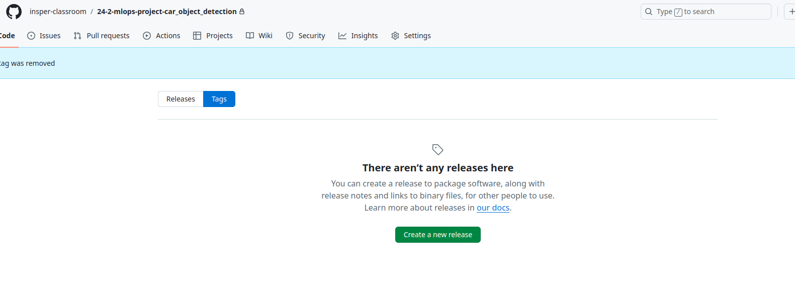

Steps for data versioning
Data versioning is a essencial step in any Machine Learning projects. It enables developer’s teams to create multiple datasets and easily change between them when training. It is useful when the team have a lot of data and is trying to use only the samples that increase model performance. In this project dvc combined with git is used to implement this task. All datasets versions are stored at a S3 bucket.
see “Startup” before this one.
Create a new data enviroment
Sometimes, it is necessary to start everything all again. The following steps show how can you do that:
Remove all tags already created (remote and local)
git push origin --delete $(git tag -l)
git tag -d $(git tag -l)
Ensure the tags were erased:

Run `data.sh to create the file “data/data.zip” with your preprocessed data. Drop value is the ratio of the dowloaded dataset that will be erased.
./scripts/data.sh <drop_value>
Run
configure_dvc.shand pass as argument the Bucket created for the dataset
./scrips/configure_dvc.sh bucket-dataset-name
After that, you will have a tag v0.0.0 with the first version of the dataset!
Create a new dataset version
Everytime you want to create a new dataset version, run the steps bellow:
Do changes in the function prepocess from
dataset.py. Then, rundata.sh:
WARNING
Check if you are at main:
git checkout main
./scrips/data.sh <drop_value>
Run
new_dataset_version.shscript to create new data version:
./scripts/new_dataset_version.sh vA.B.C
To use a specific data version:
git checkout vA.B.C
dvc checkout